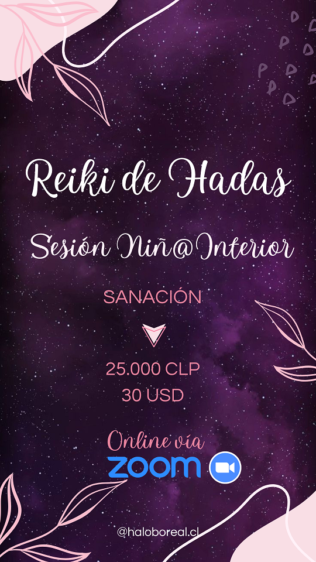

Halo Boreal
Conoce nuestros cursos
Reiki de las Hadas
descripcion
Reiki Delfines

🐚El delfín Atlante es un animal sutil que transmite una vibración amorosa,
y poderosa energía a través de este sistema de sanación.
Recibir energía de los delfines sanadores y pedirles asistencia para armonizarte,
a otras personas y resonar con la energía de Atlántida🐚
🐬Este sistema te entregara la sanación delfinica que realizan estos hermosos cetáceos,
también seres de luz, en este curso comprenderás muchos detalles de su origen y podrás
sentir la energía que ellos entregan a cada uno de nosotros.
🐬Temario:
🐚Reiki
🐚Chakras y chi ball
🐚Atlántida
🐚Cetáceos
🐚Delfines
🐚Meditaciones guiadas de Atlántida
🐚Contenido Reiki Delfines Atlantes
🐚Resolución de dudas
🐚Tratamiento presencial
🐚Tratamiento a distancia
🐚Iniciación en sistema Reiki delfines Practicante Y Maestro
🐬Incluye:
🐚Material de apuntes complementarios en pdf.
🐚Diploma de participación e Iniciación en REIKI DELFINES Digital
🐚Grabación de clases
🐬Miércoles 6,13 y 20 de Julio
🐬Horario: 19:30 a 21:15 H. (Hora Chile)
🐬Valor: $30.000 CLP
🐬 vía PayPal 42 USD
🐬alumnos ya iniciados en @haloboreal.cl
que deseen repasar $8.888
Reiki Naturaleza Mágica

Sistema para conectar con la Madre Tierra y su sabiduría
A través de los reinos Elementales.
Este sistema otorga crecimiento espiritual,
elevación de vibración y conexion con la Madre Tierra, potenciara el respeto hacía ella.
🌱Temario:
🌱Introduccion al reiki Naturaleza Mágica
🌱canalización
🌱Madre Tierra
🌱Lord Merlín y Maestros
🌱reinos elementales
🌱orbes de luz
🌱autotratamiento
🌱tratamiento a terceros presencial y a distancia
🌱Iniciación en Reiki Naturaleza Mágica
Requisitos: No necesitas conocimientos previos.
🌱Fecha: Domingo 10 de Julio 2022
🌱Horario (Chile)
1er Bloque Introducción y teoría: 11:00 a 13:00 H.
2do bloque teoría y práctica: 15:00 a 18:00 H. (Final aprox)
Valor $28.888 CLP
Vía PayPal 38 USD
🌱Incluye:
Material imprimible pdf
Meditaciones vía audio
Grabación de clase
Diploma de participación e iniciación en Reiki Naturaleza Mágica
Apoyo a través de grupo whatsapp